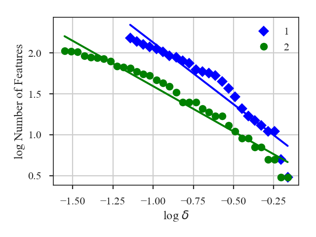

See the tutorial for a description of the dendrogram statistics.
Warning
Requires the optional astrodendro package to be installed. See the documentation
Using the two comparisons defined by Burkhart et al. 2013, Dendro_Distance provides two distance metrics:
The distance between histograms of peak intensity in the leaves of the dendrogram, measured over a range of minimum branch heights, is:
\[d_{\mathrm{Hist}} = \left[\sum H(p_{1,\delta_I},p_{2,\delta_I})\right]/N_\delta\]\(p_{i,\delta_I}\) are the histograms with minimum branch height of \(\delta_I\), \(H(i, j)\) is the Hellinger distance, and \(N_{\delta}\) is the number of branch heights (and histograms) that the dendrogram was computed for.
The slopes of the linear relation fit to the log of the number of features in the tree as a function of minimum branch height:
\[d_{\rm slope} = \frac{|\beta_1 - \beta_2|}{\sqrt{\sigma_{\beta_1}^2 + \sigma_{\beta_1}^2}}\]\(\beta_i\) are the slopes of the fitted lines and \(\sigma_{\beta_i}\) are the uncertainty of the slopes.
More information on the distance metric definitions can be found in Koch et al. 2017
The data in this tutorial are available here.
We need to import the Dendrogram_Distance class, along with a few other common packages:
>>> from turbustat.statistics import Dendrogram_Distance
>>> from astropy.io import fits
>>> import matplotlib.pyplot as plt
And we load in the two data sets. Dendrogram_Distance can be given two 2D images or cubes. For this example, we will use two cubes:
>>> cube = fits.open("Design4_flatrho_0021_00_radmc.fits")[0] # doctest: +SKIP
>>> cube_fid = fits.open("Fiducial0_flatrho_0021_00_radmc.fits")[0] # doctest: +SKIP
Dendrogram_Distance requires the two datasets to be given. A number of other parameters can be specified to control the dendrogram settings or fitting settings. This example sets the minimum deltas (branch height) for the dendrograms, as explained in the dendrogram tutorial. Other dendrogram settings, such as the minimum pixel intensity to use and the minimum number of pixels per structure, are also set.
>>> dend_dist = Dendrogram_Distance(cube_fid, cube,
... min_deltas=np.logspace(-2, 0, 50),
... min_features=100,
... dendro_params={"min_value": 0.005,
... "min_npix": 50}) # doctest: +SKIP
The min_features sets a threshold on the number of ‘features’ in a dendrogram needed for it to be included to calculate the distances. “Features” is the number of branches and leaves in the dendrogram. As delta is increased in the dendrogram, the number of features drops significantly, with large values leaving only a few features in the dendrogram. min_features ensures a meaningful histogram can be measured from the dendrogram properties.
If additional parameters need to be set to create the dendrograms, dendro_kwargs takes a dictionary as input and passes the arguments to run. Separate settings can be given for each dataset by specifying both dendro_kwargs and dendro2_kwargs. The individual Dendrogram_Stats objects can be also be accessed as dendro1 and dendro2 (see the dendrogram tutorial for more information).
>>> dend_dist.distance_metric(verbose=True) # doctest: +SKIP
The distance computation is very fast for both methods so both distance metrics are always computed.
Verbose mode creates two plots, which can be saved by specifying save_name in the call above. The first plot shows the histograms used in the Hellinger distance.
The top two panels are the ECDFs of the histograms of peak intensity within features (branches or leaves) of the dendrogram. The histograms are shown in the bottom two panels. The first dataset is shown in the first column plots and the second in the second column plots. Note that the intensity values are standardized in all plots. There are several curves/histograms shown in each plot. Each one is the dendrogram with different cut-offs of the minimum delta (branch height).
The histogram distance is:
>>> dend_dist.histogram_distance # doctest: +SKIP
0.14298381514818145
The second plot shows the log of the number of features (branches + leaves) in a dendrogram as a function of log delta (minimum branch height):
A line is fit to this relation, and the difference in the slopes of those lines is used to calculate the distance:
>>> dend_dist.num_distance # doctest: +SKIP
2.7987025053709766
For both plots, the plotting labels can be changed from 1 and 2 by setting label1 and label2 in distance_metric.
For large data sets, creating the dendrogram can be slow. Particularly when comparing many datasets to a fiducial dataset, recomputing the dendrogram each time wastes a lot of time. Dendrogram_Distance can be passed a precomputed Dendrogram_Stats object in two ways:
A precomputed Dendrogram_Stats object can be given to fiducial_model in Dendrogram_Distance.
>>> from turbustat.statistics import Dendrogram_Stats >>> dend_stat = Dendrogram_Stats(cube_fid, ... min_deltas=np.logspace(-2, 0, 50), ... dendro_params={"min_value": 0.005, ... "min_npix": 50}) # doctest: +SKIP >>> dend_stat.run() # doctest: +SKIP >>> dend_dist = Dendrogram_Distance(cube_fid, cube, ... min_deltas=np.logspace(-2, 0, 50), ... min_features=100, ... dendro_params={"min_value": 0.005, ... "min_npix": 50}, ... fiducial_model=dend_stat) # doctest: +SKIPNote that the data (
cube_fid) still need to be given toDendrogram_Distance.Warning
The object given to
fiducial_modelshould be run with the samemin_deltasgiven toDendrogram_Stats. The histogram distance is only valid when comparing dendrograms measured with the same deltas.
Dendrogram_Stats can be saved as pickle files. When dataset1 and dataset2 are given to`~turbustat.statistics.Dendrogram_Distance` as strings, it is assumed that these are pickle files:
>>> dend_stat.save_results(output_name="Fiducial_Dendrogram_Stats.pkl", keep_data=False) # doctest: +SKIP
>>> dend_dist = Dendrogram_Distance("Fiducial_Dendrogram_Stats.pkl", cube,
... min_deltas=np.logspace(-2, 0, 50),
... min_features=100,
... dendro_params={"min_value": 0.005,
... "min_npix": 50},
... fiducial_model=dend_stat) # doctest: +SKIP
Warning
In both cases, the saved dendrograms should be run with the same min_deltas given to Dendrogram_Stats. The histogram distance is only valid when comparing dendrograms measured with the same deltas.